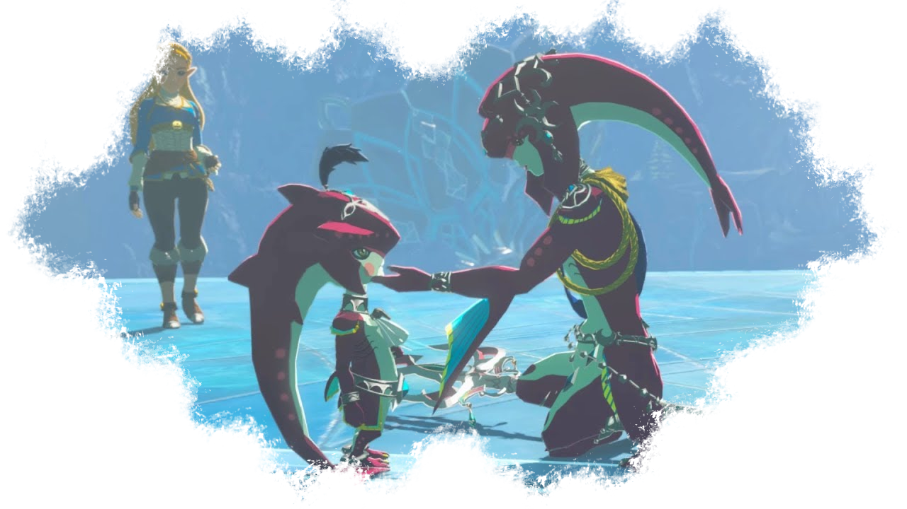
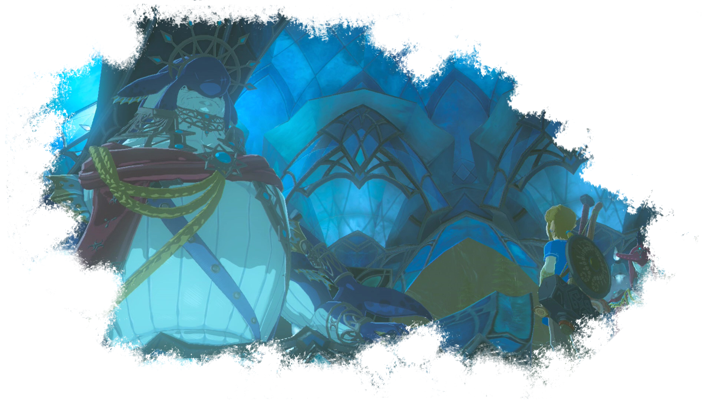
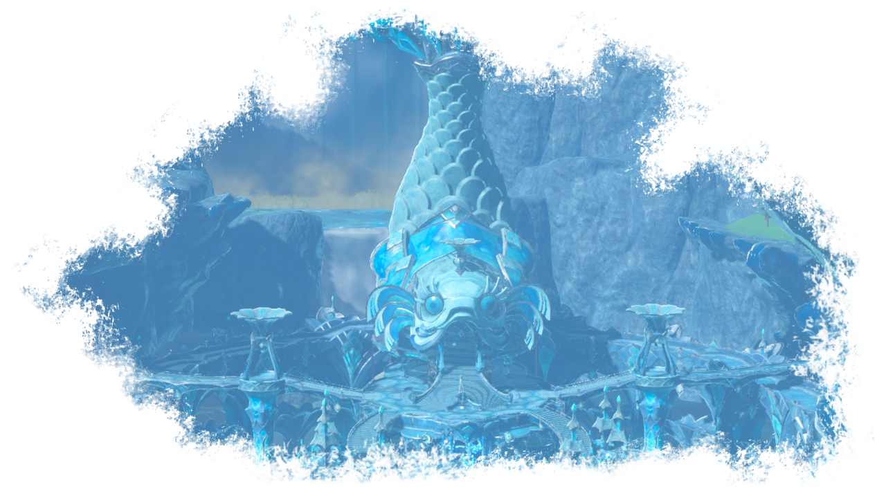
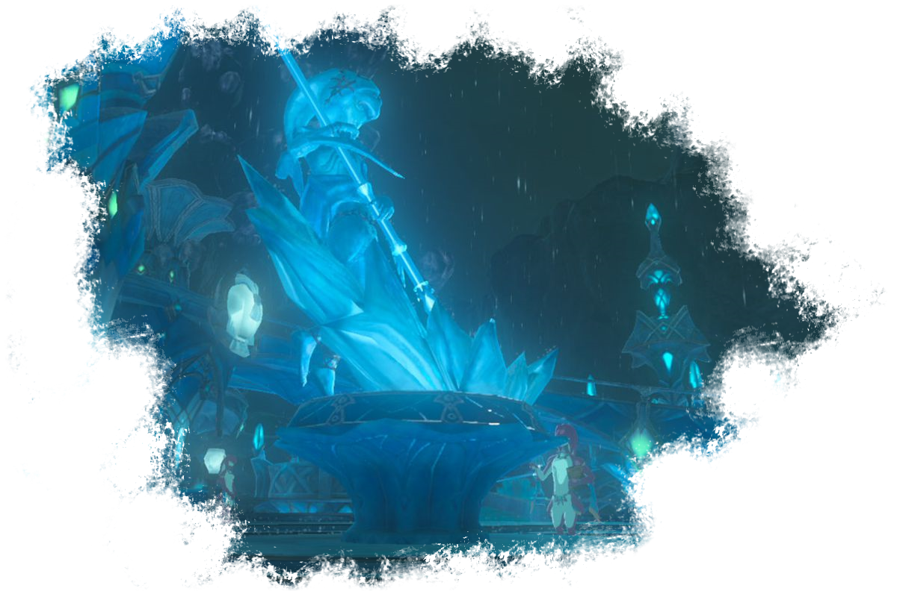

Les Zoras

Les zoras sont un peuple d'homme-poissons aussi bien à l'aise sur terre que dans l'eau (sûrement plus dans l'eau d'ailleurs!). Ils sont grands, forts, très agiles, peuvent avoir plusieurs couleurs différentes (à l'instar des poissons koï), et sont d'incroyables nageurs. Ils font preuve de capacités physiques hors du commun, comme celle de remonter les chutes d'eau.
Ce peuple des eaux est dirigé par le roi Dorephah, souverain très respecté et aimé par son peuple. La tribu Zora est située dans la région de la grande source de Lanelle, dans la province de Lanelle.

Les Zoras ont une espérance de vie bien plus importante que les hyliens, si bien qu'un siècle après le retou du fléau, le prince Sidon, enfant lors de l'attaque, est "juste" un adulte dans la fleur de l'âge.
Lorsque Link revient dans les contrées Zora, il rencontre le prince Sidon qui dit rechercher un hylien pour aider son peuple à résoudre un problème. Le jeune guerrier décide donc de le suivre jusqu'à la cité Zora pour constater le danger qui submerge la région.

La créature Divine Vah'Ruta est devenue incontrôlable et menace de faire sauter le barrage qui protège la cité. Le peuple amphibien a désespérément besoin d'un hylien aussi talentueux que Link pour calmer cette chose gargantuesque et ramener la paix sur toute la région de Lanelle.
Le héros va donc collaborer avec le très charismatique prince Sidon pour s'infiltrer à l'intérieur de l'éléphant mécanique, en reprendre le contrôle en éliminant l'ombre de Ganon qui la dirige, et libérer l'esprit de son ancienne camarade tombée au combat un siècle plus tôt.
La zora la plus connue n'est autre que la prodige aujourd'hui décédée, Mipha, la fille du roi. Aussi timide qu'elle était aimée par son peuple, celui-ci a été dévasté par sa mort, au point d'avoir sculpté une statue en son honneur. C'est la vision de ce monument incroyable qui a permis à Link de se souvenir du lien qui existait entre la prodige et lui.

Les zoras sont plutôt déconnectés des autres races. Certains commercent avec elles, d'autres tentent de créer des auberges dans la cité pour favoriser le tourisme, mais la majorité d'entre eux restent éloignés des autres cultures. Pourtant, il est impossible pour Hyrule d'espérer vaincre Ganon sans l'aide du peuple des eaux.